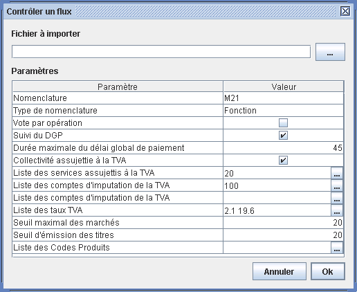

Contrôles de flux
Les contrôles de flux sont une nouvelle fonctionnalité de XéMéLios 3.2. Elles permettent d'appliquer des contrôles techniques et métier à des flux XML en vue de valider les flux produits par les éditeurs ou les collectivités.
L'accès aux contrôles se fait depuis le menu Fichier / Contrôler. A ce jour, seuls les documents PES V2 Aller sont contrôlables.

Le choix d'un type de document contrôlable donne accès à la boite de contrôle.

Cette boite permet de choisir l'emplacement du fichier à contrôler, et les valeurs des paramètres de contrôle. Pour lancer le contrôle, il suffit de cliquer sur Ok.
A l'issue du processus de contrôle, XéMéLios affiche le rapport de contrôle. Ce document est un document navigable comportant des liens vers les éléments contrôlés qui comportent des erreurs. Les anomalies rencontrées sont listées dans ce rapport.